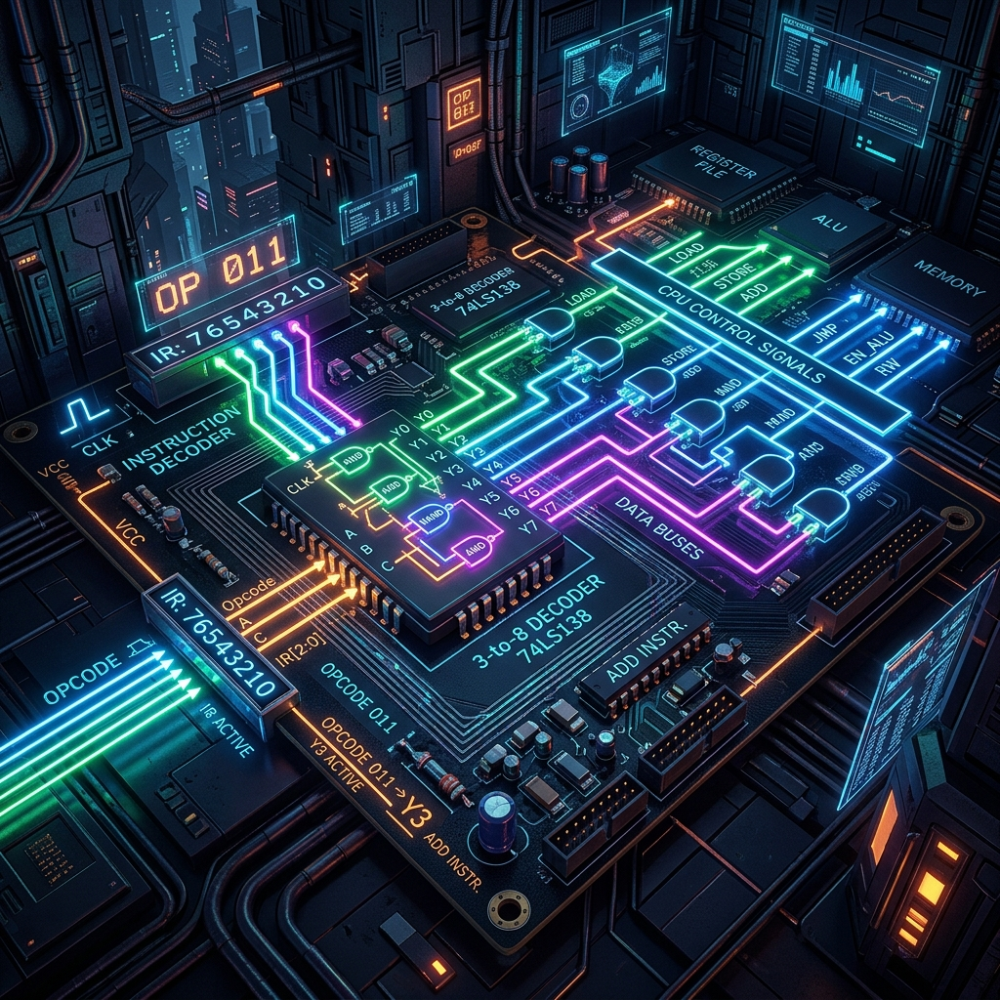

Introduction to Instruction Decoding
Welcome to Part 5 of our series on Building an 8-bit Computer from Scratch. In previous chapters, we constructed the Arithmetic Logic Unit (ALU), built robust memory architectures, and established a functioning clock module. Now, we arrive at the heart of our computer's "brain": the Instruction Decoder and Control Logic. Without this critical component, our CPU is just a collection of disconnected modules. The instruction decoder is responsible for interpreting the numeric opcodes stored in memory and orchestrating the exact sequence of control signals required to execute them.

Every program you write, whether in assembly or a high-level language, eventually boils down to machine code—a sequence of binary numbers. When the CPU fetches an instruction from memory, it receives an opcode (operation code). For an 8-bit computer, this opcode typically occupies 4 to 8 bits. Our architecture uses a 4-bit opcode, allowing for up to 16 distinct instructions (such as NOP, LDA, ADD, SUB, STA, LDI, JMP, etc.), while the remaining 4 bits represent the operand or memory address.
The control logic takes this opcode and translates it into a symphony of electrical signals. These signals enable buffers, trigger register loads, select ALU operations, and manage memory read/write cycles. In this article, we'll dive deep into the combinatorial logic required to build a robust instruction decoder, explore how splitters isolate the opcode bits, and demonstrate how to route these bits through AND gates to assert specific control lines.
The Anatomy of an Opcode
In our architecture, an instruction is 8 bits wide (1 byte). The upper 4 bits (bits 4-7) contain the opcode, while the lower 4 bits (bits 0-3) contain the operand. Let's look at the instruction format:
Bit 7 Bit 6 Bit 5 Bit 4 | Bit 3 Bit 2 Bit 1 Bit 0
[ OPCODE (4-bit) ] | [ OPERAND (4-bit) ]
To decode this instruction, the first step is to isolate the upper 4 bits. In digital logic, we achieve this using a bus splitter. A bus splitter takes an 8-bit wide input bus and breaks it down into individual wires (or narrower buses). Once we have the 4-bit opcode separated from the operand, we can feed it into a decoder circuit.
Decoding Logic: The 4-to-16 Decoder
A decoder is a combinatorial logic circuit that converts binary information from N input lines to a maximum of 2^N unique output lines. For our 4-bit opcode, we need a 4-to-16 decoder. If the opcode is 0000 (NOP), the decoder asserts output line 0. If the opcode is 0001 (LDA), it asserts output line 1, and so forth.
How does a decoder work at the gate level? It relies heavily on AND gates and NOT gates (inverters). To assert a specific output line, the decoder uses an AND gate connected to a specific combination of the true and inverted input signals. For example, to decode the binary value 1010 (which is decimal 10), the AND gate would require inputs from the non-inverted Bit 3, inverted Bit 2, non-inverted Bit 1, and inverted Bit 0. When this exact pattern is present, and only when it is present, the AND gate outputs a high signal (1).
Building a 3-to-8 Decoder in SQGATE
To illustrate this concept without getting overwhelmed by the 16 outputs of a 4-bit decoder, let's look at a simpler 3-to-8 decoder. A 3-to-8 decoder takes a 3-bit input (which can represent values from 0 to 7) and asserts one of 8 output lines. This is a fundamental building block that you can easily expand into a 4-to-16 decoder.
Below is the SQGATE JSON circuit representing a 3-to-8 decoder. It uses a 3-bit input pin, a bus splitter to separate the bits, a bank of NOT gates to provide inverted signals, and an array of 3-input AND gates for the decoding logic.
{
"version": 1,
"components": [
{ "type": "in", "id": "opcode_in", "x": 100, "y": 300, "bits": 3, "label": "Opcode (3-bit)" },
{ "type": "split", "id": "splitter", "x": 200, "y": 300, "bits": 3 },
{ "type": "not", "id": "inv0", "x": 300, "y": 200, "bits": 1 },
{ "type": "not", "id": "inv1", "x": 300, "y": 300, "bits": 1 },
{ "type": "not", "id": "inv2", "x": 300, "y": 400, "bits": 1 },
{ "type": "and", "id": "and0", "x": 500, "y": 100, "bits": 1, "inputs": 3 },
{ "type": "and", "id": "and1", "x": 500, "y": 180, "bits": 1, "inputs": 3 },
{ "type": "and", "id": "and2", "x": 500, "y": 260, "bits": 1, "inputs": 3 },
{ "type": "and", "id": "and3", "x": 500, "y": 340, "bits": 1, "inputs": 3 },
{ "type": "and", "id": "and4", "x": 500, "y": 420, "bits": 1, "inputs": 3 },
{ "type": "and", "id": "and5", "x": 500, "y": 500, "bits": 1, "inputs": 3 },
{ "type": "and", "id": "and6", "x": 500, "y": 580, "bits": 1, "inputs": 3 },
{ "type": "and", "id": "and7", "x": 500, "y": 660, "bits": 1, "inputs": 3 },
{ "type": "out", "id": "out0", "x": 650, "y": 100, "bits": 1, "label": "000" },
{ "type": "out", "id": "out1", "x": 650, "y": 180, "bits": 1, "label": "001" },
{ "type": "out", "id": "out2", "x": 650, "y": 260, "bits": 1, "label": "010" },
{ "type": "out", "id": "out3", "x": 650, "y": 340, "bits": 1, "label": "011" },
{ "type": "out", "id": "out4", "x": 650, "y": 420, "bits": 1, "label": "100" },
{ "type": "out", "id": "out5", "x": 650, "y": 500, "bits": 1, "label": "101" },
{ "type": "out", "id": "out6", "x": 650, "y": 580, "bits": 1, "label": "110" },
{ "type": "out", "id": "out7", "x": 650, "y": 660, "bits": 1, "label": "111" }
],
"wires": [
{ "from": "opcode_in.out", "to": "splitter.in" },
{ "from": "splitter.out[0]", "to": "inv0.in" },
{ "from": "splitter.out[1]", "to": "inv1.in" },
{ "from": "splitter.out[2]", "to": "inv2.in" },
{ "from": "inv0.out", "to": "and0.in[0]" },
{ "from": "inv1.out", "to": "and0.in[1]" },
{ "from": "inv2.out", "to": "and0.in[2]" },
{ "from": "and0.out", "to": "out0.in" },
{ "from": "splitter.out[0]", "to": "and1.in[0]" },
{ "from": "inv1.out", "to": "and1.in[1]" },
{ "from": "inv2.out", "to": "and1.in[2]" },
{ "from": "and1.out", "to": "out1.in" },
{ "from": "inv0.out", "to": "and2.in[0]" },
{ "from": "splitter.out[1]", "to": "and2.in[1]" },
{ "from": "inv2.out", "to": "and2.in[2]" },
{ "from": "and2.out", "to": "out2.in" },
{ "from": "splitter.out[0]", "to": "and3.in[0]" },
{ "from": "splitter.out[1]", "to": "and3.in[1]" },
{ "from": "inv2.out", "to": "and3.in[2]" },
{ "from": "and3.out", "to": "out3.in" },
{ "from": "inv0.out", "to": "and4.in[0]" },
{ "from": "inv1.out", "to": "and4.in[1]" },
{ "from": "splitter.out[2]", "to": "and4.in[2]" },
{ "from": "and4.out", "to": "out4.in" },
{ "from": "splitter.out[0]", "to": "and5.in[0]" },
{ "from": "inv1.out", "to": "and5.in[1]" },
{ "from": "splitter.out[2]", "to": "and5.in[2]" },
{ "from": "and5.out", "to": "out5.in" },
{ "from": "inv0.out", "to": "and6.in[0]" },
{ "from": "splitter.out[1]", "to": "and6.in[1]" },
{ "from": "splitter.out[2]", "to": "and6.in[2]" },
{ "from": "and6.out", "to": "out6.in" },
{ "from": "splitter.out[0]", "to": "and7.in[0]" },
{ "from": "splitter.out[1]", "to": "and7.in[1]" },
{ "from": "splitter.out[2]", "to": "and7.in[2]" },
{ "from": "and7.out", "to": "out7.in" }
]
}
You can copy this JSON object and paste it directly into the SQGATE simulator to see the 3-to-8 decoder in action. Toggle the 3-bit input block, and you'll observe how exactly one output line is asserted for each unique binary combination. This visual confirmation is crucial when building complex control units.
From Instruction to Control Word
While isolating the instruction is the first step, our CPU needs more than just a single asserted line; it requires a coordinated set of control signals across multiple clock cycles. This is where the concept of a Control Word comes into play.
A Control Word is a multi-bit binary value where each bit is hardwired to a specific control point in the CPU. For example, in a 16-bit control word, Bit 0 might enable the A Register to write to the bus (AO - A Out), Bit 1 might command the A Register to read from the bus (AI - A In), Bit 2 might command the Memory Address Register to load (MI), and so on.
Combining Decoder Output with Timing Steps
Instructions in an 8-bit computer rarely execute in a single clock cycle. They typically require multiple steps (or states). For instance, fetching an instruction from memory usually takes two or three clock cycles (often called T-states). First, the program counter (PC) outputs its value to the memory address register (MAR). Next, the RAM outputs the data at that address to the instruction register (IR). Finally, the PC increments.
Because an instruction unfolds over time, the control logic must consider two inputs: the decoded instruction line AND the current step (T-state) from a ring counter or finite state machine (FSM). Therefore, a control signal like "Enable RAM Output" (RO) might be asserted during T-state 1 of the Fetch cycle for every instruction, but it might also be asserted during T-state 3 of the LDA (Load A) instruction.
To implement this, we use OR gates. We can feed the RO control line with an OR gate whose inputs are the various conditions under which RO should be active. For instance:
RO = (T1) OR (LDA_Decoder_Line AND T3) OR (ADD_Decoder_Line AND T3) ...This equation dictates that RAM Output is enabled during T1 of any instruction cycle, or during T3 if the instruction happens to be LDA or ADD. By systematically mapping out these boolean equations for every control signal, you create the combinational logic network that breathes life into the silicon.
Minimizing Control Logic
As you map out the boolean equations for your CPU, you'll notice that the combinatorial logic can become incredibly complex and unwieldy. Designing an array of discrete AND and OR gates to handle every control signal across multiple T-states and instructions requires an immense amount of wiring and silicon real estate.
Historically, computer architects have used various techniques to minimize this logic. One common approach is using ROM (Read-Only Memory) or EEPROM to replace the combinatorial gates entirely. By feeding the opcode and the current T-state into the address lines of a ROM chip, the ROM can simply output the pre-programmed 16-bit or 32-bit Control Word corresponding to that exact state. This technique is often referred to as Microcode, and it drastically simplifies hardware design at the cost of execution speed and memory usage.
Another approach is using Programmable Logic Arrays (PLAs), which provide a structured array of AND and OR gates that can be configured to implement sum-of-products boolean functions efficiently. We will explore these advanced techniques, specifically microcode state machines, in the next installment of this series.
Conclusion
The Instruction Decoder and Control Logic unit is the undeniable brain of the CPU. It translates abstract software opcodes into concrete hardware action, pulsing control lines with precise timing to move data, perform arithmetic, and manipulate memory. Building this logic from discrete logic gates using splitters, inverters, and AND/OR networks is a phenomenal way to understand the physical realities of computation.
By studying the 3-to-8 decoder circuit provided above, you've taken the first step toward building a full instruction sequencer. As you scale this up to a 4-to-16 decoder and combine it with a ring counter, your CPU will gain the ability to autonomously fetch, decode, and execute complex programs.